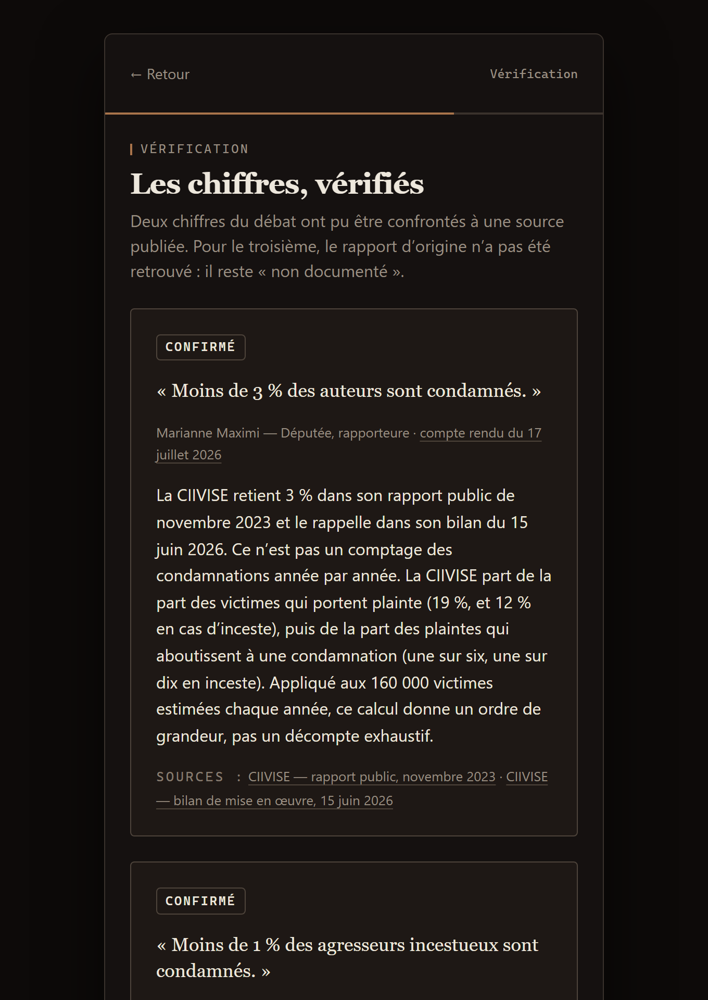

La politique intéresse. L’actualité se délaisse.
Le problème
53 %
la politique
36 %
l’actualité
Sources : CEVIPOF / OpinionWay, baromètre de la confiance politique, vague 17, janvier 2026, Q23, 3 166 inscrits ; Reuters Institute, Digital News Report 2026, fiche France. Deux questions, deux sources, deux périodes : l’écart n’est pas une comparaison directe.
53 %
s’intéressent à la politique
Niveau stable depuis 2009.
Beaucoup : 16 % · Assez : 37 %
CEVIPOF · VAGUE 17 · JANVIER 2026
36 %
s’intéressent à l’actualité
58 % en 2015.
Soit 22 points de moins en onze ans.
REUTERS INSTITUTE · DNR 2026
La cible de Quorum · les moins de 35 ans
Leur intérêt pour la politique progresse : l’écart avec les plus de 60 ans est passé de −25 à −7 points en dix ans.
CEVIPOF · FRACTURES FRANÇAISES 2025 · THE CONVERSATION, 10 DÉCEMBRE 2025
L’intérêt est là. Le temps de lire, non. Quorum : une loi, dix minutes.
Lire. Voter. Vérifier. Revoter.
Le principe
4 gestes
10 étapes
0 avis
Captures Quorum, 14 novembre 2026, scrutin n° 8429 du 21 juillet 2026. La donnée vient du MCP Hémicycle, lu hors ligne ; dix contrôles décident de la publication.
01

02

03

04

MCP HÉMICYCLE dix contrôles bloquants, un JSON par loi, une app sans modèle. 12 / 12 preuves.
Aucun avis sur la loi. Aucun point pour le vote.
Démo.
70 secondes
Scrutin n° 8429
21 juillet 2026
Recommencer
efface le vote
Application Quorum servie en local : python -m http.server 8000. Les flèches ← → changent de diapo, même pendant la démo.
Cliquer dans l’écran pour voter. ← → pour changer de diapo.
Le corpus gratuit. La veille payante.
Le modèle
0,08 – 0,15 €
par loi, une fois
5 € / mois
hypothèse
API Hémicycle, jeu scrutins (Assemblée, XIVe législature et suivantes), ligne n° 10 001 au 14/11/2026 ; total non publié. Coût mesuré : docs/pipeline-freemium.md § 7 ; projection 10 000 × 0,08–0,15 €. Prix : hypothèse. Veille : produit cible. « Controversé » : couverture médiatique. Redistribution : non documentée.
Le corpus
10 000 +
scrutins publics sur des lois et amendements
- Traiter 10 000 fiches : 800 à 1 500 €, une fois
- Libre accès, sélection par couverture médiatique : « controversé »
La veille · abonnés pro
- Une loi par jour
- Les textes votés suivis en permanence, dans un tableau de bord
- Alertes par thème, archive, export
La viabilité
- Appels Hémicycle + traitement IA : 0,08 à 0,15 € par loi
- 365 jours : 29 à 55 € par an
- 5 €/mois : un abonné couvre l’année
L’abonnement paie les appels Hémicycle et le traitement IA. Le coût est par loi, jamais par lecteur.
Ce qui n’est pas vendu : le vote.
Lire. Voter.
Vérifier. Revoter.
Le débat continue. Avec vous, cette fois.
1 / 5